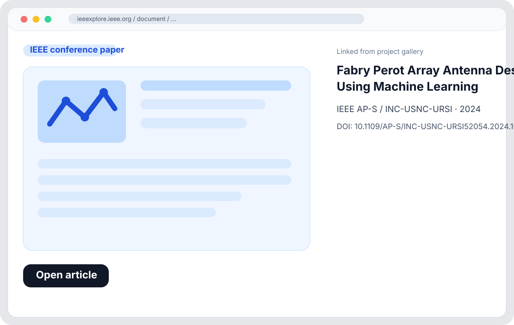

IEEE TAP 2025
ML-Aided PRGW MIMO Antenna Design
Inverse design of a newly shaped defected ground structure for a compact PRGW-based two-port MIMO antenna, targeting high isolation, strong gain, and efficient synthesis.
Open in IEEE libraryFeatured paper-driven projects. Click any image to open the related IEEE library / DOI record.
Inverse design of a newly shaped defected ground structure for a compact PRGW-based two-port MIMO antenna, targeting high isolation, strong gain, and efficient synthesis.
Open in IEEE library
Wideband foldable origami-style printed RGW MIMO antenna with an additively manufactured dielectric resonator, combining compact integration and beam reconfigurability.
Open in IEEE library
Conference work on learning-assisted exploration of Fabry–Perot array antennas, aimed at accelerating array design and navigating complex electromagnetic design tradeoffs.
Open in IEEE libraryANN-assisted design of a flexible slot array antenna based on SIW technology, focusing on beam reconfigurability and compact high-frequency array implementation.
Open in IEEE library